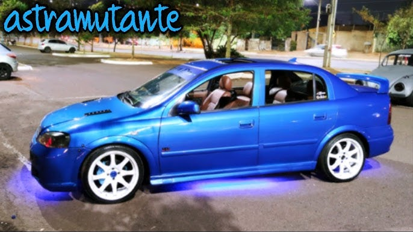
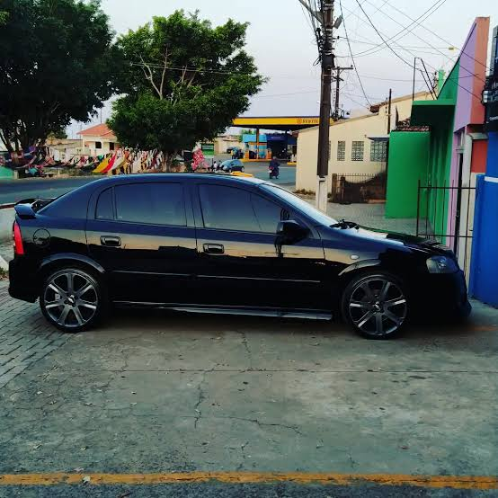
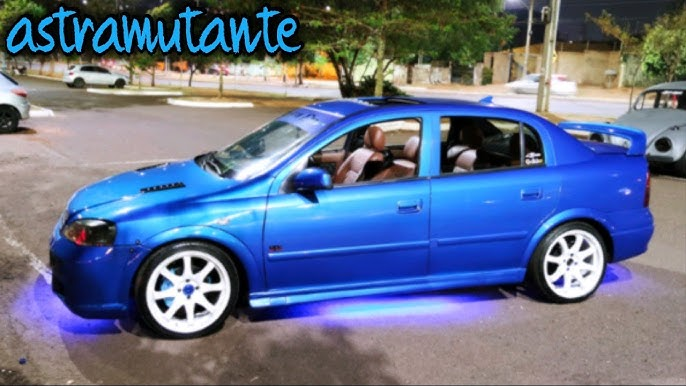
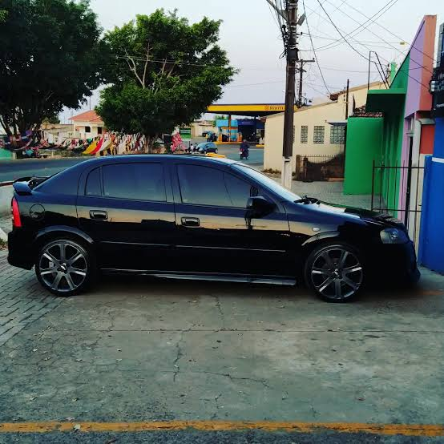
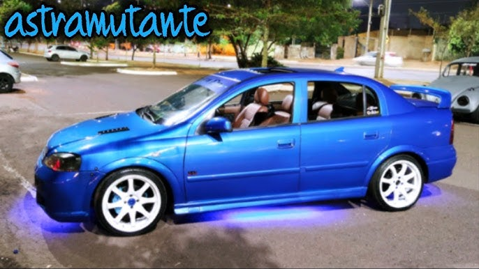
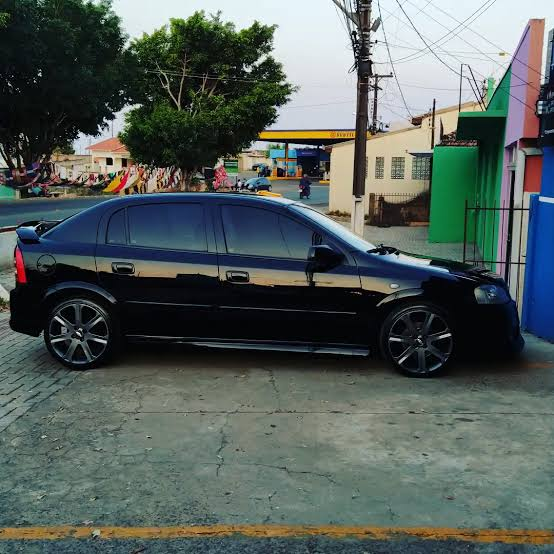
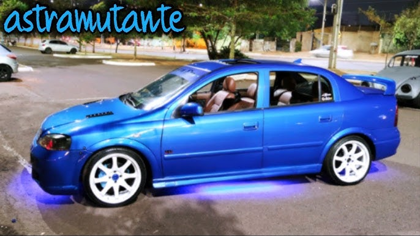
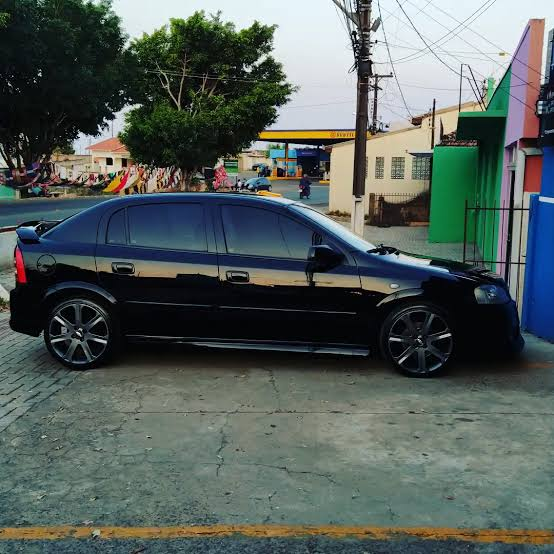

O Chevrolet Astra foi um carro médio de grande sucesso no Brasil (1998-2011), valorizado pelo desempenho do motor 2.0, estabilidade, robustez mecânica e conforto. Disponível nas versões hatch e sedan, destacou-se com motores Flexpower, atingindo até 140 cv (álcool) nos modelos finais, sendo considerado um carro durável e de manutenção acessível.
Motor: 2.0 Flexpower (8V) com potências de 133 cv (gasolina) a 140 cv (álcool) a 5600 rpm.
Torque: Elevado, proporcionando boas retomadas (19,6 kgfm no álcool).
Velocidade Máxima: ~200 km/h.
Aceleração 0-100 km/h: ~9,8 segundos.
Câmbio: Manual de 5 marchas (alguns modelos com automático de 4 marchas no passado).
Suspensão: Independente McPherson na dianteira e eixo de torção na traseira, elogiada pela estabilidade.
Versões: Advantage, Sport, GSi (2.0 16V), SS.
Equipamentos: Nos anos finais, ofereceu ar-condicionado digital, rodas aro 16, freios ABS e airbag.
Pontos Fortes: Direção hidráulica confortável, sistema de freios eficiente e painel com boa ergonomia.
Procedência: Produção nacional, após importação da primeira geração (belga) nos anos 90.
Em resumo, é reconhecido no mercado de usados pela confiabilidade, embora o consumo urbano seja elevado, na faixa de 5,8 km/l no álcool.